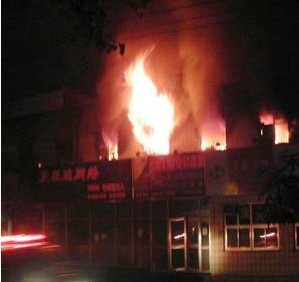
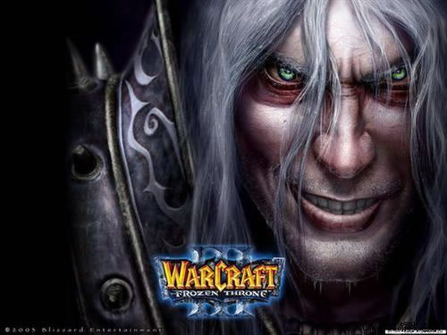

玩游戏的孩子，"男的都变小偷，女的都变三陪小姐".
但在那个时期，还顾及不到这些，如那篇文章说的，中国的厂商们也是不得已而为之.而2001年只是韩国人在中国疯狂圈钱的开始.直到几年后中国国产网络游戏兴起才逐渐改变了这个局面.
那么2003年以前我们就一直没有意识到这些吗?未必没人想过，但2002年又出了件事，使中国游戏又遭受了重大打击.
其实事情本身并不复杂，两个孩子点火烧了一个名为"蓝急速"的网吧，一同还烧死了24个人.事后，几乎是全国网吧关门.
说到这里我们总有些奇怪，两个孩子点火烧网吧，为什么要全国的网吧关门?

昨日之歌：当时因为此事件掀起的全国网吧大整顿，造成了我们经常要小心翼翼地摸到一处极为隐蔽的民房 再轻声说出2句暗号，才可以玩到自己朝思慕想的游戏。
就在同一年，南京发生了饭馆的投毒事件，死了38个人.凭什么全国的饭馆就不关门?
随后媒体铺天盖地地批判黑网吧，说网吧大门被锁.那么，网吧把门锁上，是为了防范谁?
很明显是为了应付各个检查和罚钱的部门，网吧早就成了各个部门的肥肉，谁都来吃一口.所以很多本来可以成为正规的网吧却一直是黑网吧，为什么呢?
这个非常容易解释.2004年<网吧生存调查报告>中列出黑网吧的3种情况，其中第一种是:
"一种黑网吧，产生于地方职能部门的不作为或朝令夕改，或者既不给许可，但也不说不允许，或者由于随意推翻自己曾经颁发的合法许可，造成从业者不得不一次次重复的申请许可。在申请被核准的空档期，他们就成了黑网吧。 "
明白了?不是不想办执照，是根本不给办.后来有封杀全县网吧时也有业主诉苦，他们的确是以封杀非法网吧为理由那么做的，但很多业主跑了整整3年就从来没给办下过执照.
最鲜明的证据就是这次蓝急速事件的处理，注意下面这2段:
|
上面这2段，是发表在《人民日报》 (2002年06月17日第四版)上，应该是非常权威了.
2400家网吧里居然有2200家是非法的，那么追究起来，相关部门是不是也应该为蓝急速的死者负一份责任呢?
现在可以来看看暴雪的老大们了，2002年他们发出了魔兽争霸3，他们在中国的老牌代理奥美公司自然是要接手，不过另一家公司，天人互动加入了竞争，价格越抬越高.
我们都知道中国的盗版率是95%以上，所以在单机时代，版权金过高就意味着代理商无钱可赚甚至是亏本，奥美就做了这个冤大头.他们一直在代理暴雪的产品，如果突然换了代理商，对他们的打击很大，所以眼看着天仁互动往上抬价，也只能咬牙跟着.暴雪则笑嘻嘻地看着中国厂商们的内斗，直到最后奥美高价拿下魔兽3.

怎么样，这一幕是不是很眼熟?暴雪的出色并不单是他们的美工。
还是在2002年，奥美开始涉足网络游戏，第一个谈的就是MU，在双方已经几乎谈妥的时候，该产品被人横刀夺爱拿走了.我们现在都知道新的东家是谁，有一部分人也大概知道当时是如何抢走的.